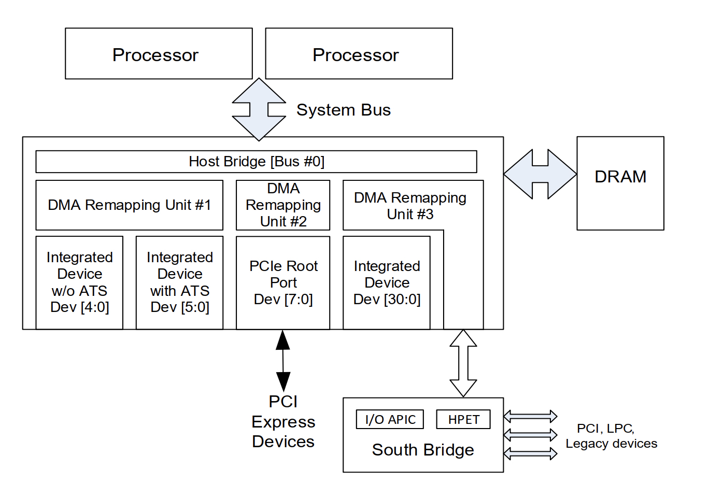
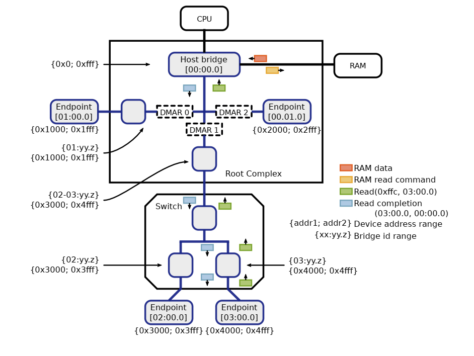
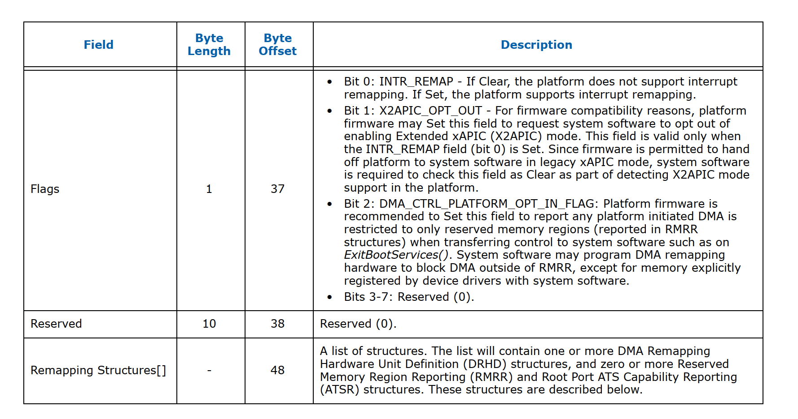
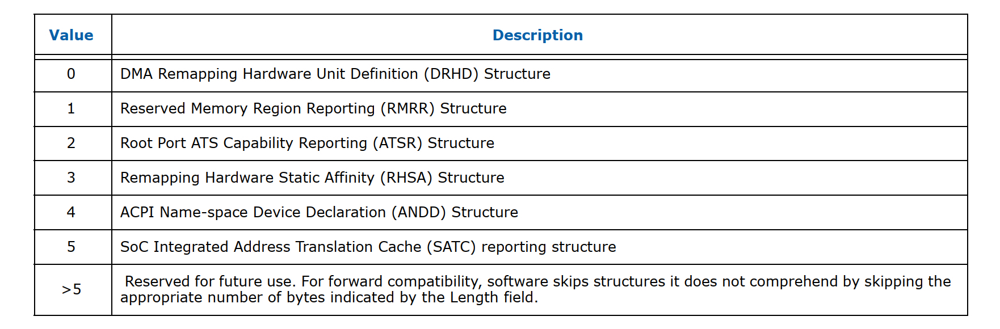
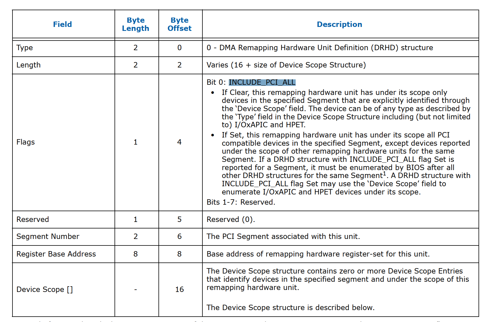

硬件架构
为了让大家对iommu有个直观的认识，我们先从硬件架构上看一下iommu是个什么东东。

如上图所示，iommu就是上图所展示的DMA Remapping Unit，通常一台硬件服务器上会有多个DMA Remapping Unit，它下面可以对接pcie设备，也可以对接ioapic, HPET设备。在后面的行文当中统一简称为DMAR，通常DMA Remapping Unit集成在Root Complex当中，系统当中所有的外设的DMA操作理论上都要经过DMAR(例外就是在p2p通信的场景下且pcie switch 开了ATS功能那就不用再到DMAR转一圈了)。下图展示了一个pci设备在有iommu的场景下其进行一次read dma操作的相关流程。

在虚拟化出现之前， iommu硬件主要功能就是将iova转换成hpa，它的出现主要解决了两个问题。一个是让只有32位DMA能力的设备能够访问大于4G以上的内存地址空间，这个带来的收益是什么呢？举个例子，假如你的系统有6G的内存，你挂了一个32位DMA能力的外设，如果你在驱动里面分配了一个在4G以上的buffer，这个时候由于硬件不能直接dma这个buffer，因此你需要在低于4G的空间分配一个tmp buffer让硬件先把数据dma到这个tmp buffer上，然后你再从这个tmp buffer把数据copy到你的dst buffer上。你看这样一来二去效率就变的极为低下，而且对开发者来说也非常的不友好。如果有了iommu这个事情就比较好解决，直接把iova映射这个dst buffer上就解决了。
引入iommu的另外一个收益就是可以把多个分散的dma操作聚合成一个连续的DMA操作。举个例子，驱动程序可能分配两个大小为4KB的且在物理内存地址上不连续的buffer，那么通过dma_map_sgtable这样的api可以直接把它们合并成一个8KB的在iova上是连续的DMA操作，这样一来原来需要两次DMA操作现在只需要一次操作就搞定了。
随着虚拟化技术在数据中心大规模的使用，iommu的主要作用也由原来单方面的转换功能变成了转换加隔离。在sriov场景iommu的隔离作用主要体现在避免直通给虚拟机A的外设DMA到虚拟机B的内存，之所以能做到这一点还要利益于pcie协议在tlp上的增强，在pcie场景下每个外设发出的dma请求都打上了与这个设备相关联的具有唯一性的flag也即设备的bdf号，而通过这个bdf号可以索引到这个设备的iova转换表。这一点是早期pci协议是无法实现的，因为早期pci设备是通过仲裁机制来实现对pci总线的独占的，也就是说同一时间只有一个pci设备能使用pci总线，因此在这种情况pci设备的dma请求当中是没有bdf号的。
iommu硬件使能
在服务器启动过程中，bios通过DMAR ACPI 表来检测iommu硬件，这张表的具体结构如下图所示：


而在remapping structures这个list里面目前支持5种类型信息：

而 drhd这个就是用来描述真实的iommu硬件的结构，下面看一下drhd format

结合上面的图我们重点介绍几个Field，一个是segment number你可以理解为与某个dma remapping unit关联的pci domain；一个是device scope也就是文章开头所描述的每个dmar unit下可以关联不同的设备；一个是INCLUDE_PCI_ALL这个标志位，当这个bit被设置上时驱动会扫描pcie bus下面的所有设备并把这些设备跟这个dmar unit 关联起来，如果这个bit没有设置上则驱动需要解析device scope 然后把这个scope下面的设备跟这个dmar unit关联起来。最后一个就是register base address它定义一系列的register。下面我们看一下驱动里面与之相对应的结构体的定义：
struct dmar_drhd_unit {
struct list_head list; /* list of drhd units */
struct acpi_dmar_header *hdr; /* ACPI header */
u64 reg_base_addr; /* register base address*/
struct dmar_dev_scope *devices;/* target device array */
int devices_cnt; /* target device count */
u16 segment; /* PCI domain */
u8 ignored:1; /* ignore drhd */
u8 include_all:1;
struct intel_iommu *iommu;
};
其中，struct intel_iommu 是对iommu硬件的一个抽象，其在内核里面的相关定义如下：
struct intel_iommu {
void __iomem *reg; /* Pointer to hardware regs, virtual addr */
u64 reg_phys; /* physical address of hw register set */
u64 reg_size; /* size of hw register set */
u64 cap;
u64 ecap;
u32 gcmd; /* Holds TE, EAFL. Don't need SRTP, SFL, WBF */
raw_spinlock_t register_lock; /* protect register handling */
int seq_id; /* sequence id of the iommu */
int agaw; /* agaw of this iommu */
int msagaw; /* max sagaw of this iommu */
unsigned int irq, pr_irq;
u16 segment; /* PCI segment# */
unsigned char name[13]; /* Device Name */
#ifdef CONFIG_INTEL_IOMMU
unsigned long *domain_ids; /* bitmap of domains */
struct dmar_domain ***domains; /* ptr to domains */
spinlock_t lock; /* protect context, domain ids*/
struct root_entry *root_entry; /* virtual address */
.......
}
其中的dmar_domain和root_entry将在iova到hpa的转换当中起到非常重要的作用，这里大家可以通过下面的一张图先有个整体的认知

上图展示的是如何使用bdf号找到相应的iova转换表以及进行地址转换的流程，相关的细节我们将在下面的行文当中详细介绍。首先，我们来看一下iommu从发现到初始化的整个流程是怎么样的。intel iommu的发现是从IOMMU_INIT_POST(detect_intel_iommu)这个地方开始的，我们先来先看一上detect_intel_iommu这个函数具体做了哪些事情。
int __init detect_intel_iommu(void)
{
int ret;
struct dmar_res_callback validate_drhd_cb = {
.cb[ACPI_DMAR_TYPE_HARDWARE_UNIT] = &dmar_validate_one_drhd,
.ignore_unhandled = true,
};
down_write(&dmar_global_lock);
ret = dmar_table_detect();
if (ret)
ret = !dmar_walk_dmar_table((struct acpi_table_dmar *)dmar_tbl,
&validate_drhd_cb);
if (ret && !no_iommu && !iommu_detected && !dmar_disabled) {
iommu_detected = 1;
/* Make sure ACS will be enabled */
pci_request_acs();
}
#ifdef CONFIG_X86
if (ret)
x86_init.iommu.iommu_init = intel_iommu_init;
#endif
early_acpi_os_unmap_memory((void __iomem *)dmar_tbl, dmar_tbl_size);
dmar_tbl = NULL;
up_write(&dmar_global_lock);
return ret ? 1 : -ENODEV;
}
这个函数主要作用就是获取dmar acpi表，然后解析表里面的相关信息如果表里面remapping structure为drhd则通过cb函数来验证dma remapping hardware unit是否可用，具体大家可以去看一下dmar_validate_one_dh相关实现这里就不多说了。还有就是指定iommu_init函数入口为intel_iommu_init。下面我们来看一下这个函数里面主要做了哪些事情。
- iommu_init_mempool
为iova, iommu_dmoain, devinfo创建内存池
- dmar_table_init
struct dmar_res_callback cb = {
.print_entry = true,
.ignore_unhandled = true,
.arg[ACPI_DMAR_TYPE_HARDWARE_UNIT] = &drhd_count,
.cb[ACPI_DMAR_TYPE_HARDWARE_UNIT] = &dmar_parse_one_drhd,
.cb[ACPI_DMAR_TYPE_RESERVED_MEMORY] = &dmar_parse_one_rmrr,
.cb[ACPI_DMAR_TYPE_ROOT_ATS] = &dmar_parse_one_atsr,
.cb[ACPI_DMAR_TYPE_HARDWARE_AFFINITY] = &dmar_parse_one_rhsa,
.cb[ACPI_DMAR_TYPE_NAMESPACE] = &dmar_parse_one_andd,
};
解析dmar表中不同类型的remapping structures，上文的图中已经进行了相关说明，目前只支持5类，它们分别是HARDWARE_UNIT，RESERVED_MEMORY，ROOT_ATS ，HARDWARE_AFFINITY，NAMESPACE。其中hardware_unit指的就是iommu硬件，而ATS指的是pcie 的一个重要feature这里我们也不细说。我们重点讲一下RESERVED_MEMORY和 HARDWARE_AFFINITY。HARDWARE_AFFINITY具体指的是Remapping Hardware Status Affinity(RHSA)信息，主要因为在numa架构下iommu硬件可能会跨node，而通过RHSA信息来报告cpu和内存跟每个iommu硬件的亲和性，从而 保证了iommu硬件的perfomace。RESERVED_MEMORY 类型的structures描述的是专门给一些设备预留的DMA内存信息，RMRR 的内存区域必须是4k对齐的，原则上RMRR只针对一些legacy设备比如USB，UMA graphics等设备来使用，而其他设备类型一般不建议使用RMRR。
- dmar_dev_scope_init
这个函数里面主要是初始化每个dmar unit(iommu硬件)下挂载的设备。
- dmar_init_reserved_ranges
这个函数主要是reserved一些iova ranges防止被其他设备dma，比如ioapic的iova地址范围还有就是各个pci/pcie设备的mmio地址空间。
- init_no_remapping_devices
这个函数的主要作用是忽略下面没有设备或者只有gfx设备(显卡驱动不会调用dma相关的api进行相关的操作)的dmar unit硬件
- init_dmars
这个函数的作用从它的名字也基本能看的出来就是对dma remapping 做一些初始化的工作。具体的比如把每个drhd关联到struct intel_iommu，假设系统当中如果有n个dma硬件则系统会创建一个大小为n sizeof(struct intel_iommu)的g_iommu数组，首先通过intel_iommu_init_qi 为每个iommu初始化Invalidation Translation Caches 机制，目前有两种一种是Register-based invalidation interface，另外一种是Queued invalidation interface；其次通过iommu_init_domains 为每个intel_iommu分配domain_ids和dmar_domains，同时为每个intel_iommu分配root_entry即root_table的基址(图6)，然后写到基址寄存器RTADDR_REG当中。
- hw_pass_through &iommu_pass_through
前者表示iommu硬件是否有直通能力是通过读iommu硬件的ecap来获取的，而后者是通过kernel的cmdline人为设置iommu=pt来实现的。如果设置为pt，则iommu_pass_through设置为1，相应的iommu_identify_mapping会设置为IDENTMAP_ALL。在这种场景下，系统会通过si_domain_init创建一个全局的dmar_domain(你可以理解它存储了所有的图6当中address translation的页表)，si表示的是static即静态的，之所以说是静态的是因为si_domain会把每个node上的内存提前建立好iova到hpa的mapping：
for_each_online_node(nid) {
unsigned long start_pfn, end_pfn;
int i;
for_each_mem_pfn_range(i, nid, &start_pfn, &end_pfn, NULL) {
ret = iommu_domain_identity_map(si_domain,
PFN_PHYS(start_pfn), PFN_PHYS(end_pfn));
if (ret)
return ret;
}
}
然后再把每个iommu下面挂着的设备跟si_domain关联起来，具体做法是说先找到这个设备所属的iommu在驱动层的表现就是找到所属的struct intel_iommu结构体，然后通过这个设备所在的bus号找到其在root_table的位置，再通过devfn创建相对应的context_entry，然后把si_dmain的pgd设置为contex_entry的基址，具体见iommu_prepare_static_identity_mapping(hw_pass_through)函数。
- bus_set_iommu(&pci_bus_type, &intel_iommu_ops)
这个函数主要是为pci_bus设置intel_iommu_ops，并通过iommu_bus_init做一些初化的工作。具体的工作包括为bus注册通知回调函数，还有就是通过add_iommu_group给每个设备创建iommu_group，一个iommu_group可以对一个设备也可以对应多个设备，至于具体是如何分组我们看一下具体的函数实现，这段逻辑最终会调用到pci_device_group函数：
struct iommu_group *pci_device_group(struct device *dev)
{
struct pci_dev *pdev = to_pci_dev(dev);
/*
* Find the upstream DMA alias for the device. A device must not
* be aliased due to topology in order to have its own IOMMU group.
* If we find an alias along the way that already belongs to a
* group, use it.
*/
if (pci_for_each_dma_alias(pdev, get_pci_alias_or_group, &data))
return data.group;
/*
* Continue upstream from the point of minimum IOMMU granularity
* due to aliases to the point where devices are protected from
* peer-to-peer DMA by PCI ACS. Again, if we find an existing
* group, use it.
*/
for (bus = pdev->bus; !pci_is_root_bus(bus); bus = bus->parent) {
if (!bus->self)
continue;
if (pci_acs_path_enabled(bus->self, NULL, REQ_ACS_FLAGS))
break;
pdev = bus->self;
group = iommu_group_get(&pdev->dev);
if (group)
return group;
}
/*
* Look for existing groups on device aliases. If we alias another
* device or another device aliases us, use the same group.
*/
group = get_pci_alias_group(pdev, (unsigned long *)devfns);
if (group)
return group;
/*
* Look for existing groups on non-isolated functions on the same
* slot and aliases of those funcions, if any. No need to clear
* the search bitmap, the tested devfns are still valid.
*/
group = get_pci_function_alias_group(pdev, (unsigned long *)devfns);
if (group)
return group;
return iommu_group_alloc();
}
这个函数的核心逻辑在于pci_acs_path_enabled，简单来说如果是pcie的设备则检查该设备到root complex的路径上如果都开启了ACS则这个设备就单独成一个iommu_group，如果不是则找到它的alias group就行了比如如果这个是传统的pci bus(没有pcie这些ACS的特性)则这个pci bus下面的所有设备就组合成一个iommu_group。
总结
文章主要讲了一下iommu硬失的架构以及iommu硬件在系统层面的初始化的整个流程， 核心的就是iommu硬件通过dmar acpi表被系统发现，然后解析表里面的信息，然后解析每个iommu硬件下的硬件设备，如果iommu为pt则为每个硬件设备创建static的 maping表，接着为每个pci设备进行分组。这里还有几个概念要理解一下： - struct inte_iommu： iommu硬件在驱动层所对应的概念 - struct iommu_group: 一个group下面可以对应多个或者一个硬件设备 - struct dmar_domain: dmar_domain里面存储的是iova->hpa的转换页表，一个dmar_domain可以为多个或者一个设备服务。 - struct iommu_domain: 一个iommu_domain里面可以有多个iommu_group，然后生个iommu_group通过iommu_domain最终找到dmar_domain进行转换。
后记
在下一篇文章里面会详细讲一下在虚拟化和非虚拟化场景下系统如何通过iommu进行dma的相关操作包括中断remapping的处理。这里大家可以先想一下这几个问题：
- 虚拟机里面是没有iommu的，那dma是如何进行的？
- 在非虚拟化场景下iommu=pt和iommu disabled这两者有什么区别？
- 不同intel iommu硬件下的两个pci设备是如何实现直通给同一个vm的？
- iommu 中断remapping在虚拟化和非虚拟化场景是如何工作的。